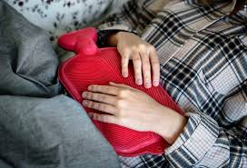

Period Pain Relief
Period pain can be tough, but this page is designed to help you manage and relieve the discomfort with interactive exercises, soothing music, and more.
Guided Breathing Exercise
Follow the inhale-exhale pattern to relax and ease your discomfort
This video provides guided stretches and exercises specifically designed to relieve period pain and tension in the lower abdomen and back.
Here, you'll find additional tips and techniques to manage period pain naturally, with a focus on relaxation and breathing exercises.
Heat Application for Pain Relief
Applying heat to your lower abdomen can be an effective way to relieve period pain. Use a heating pad or warm water bottle for 15-20 minutes at a time.
How to Make a Homemade Heat Pack
Learn how to make your own heat pack to help with period pain relief. Follow the link below for detailed instructions:

Pain Journal
Track your pain levels and feelings during your period. Your entries will be saved locally on your device until you close the webpage.